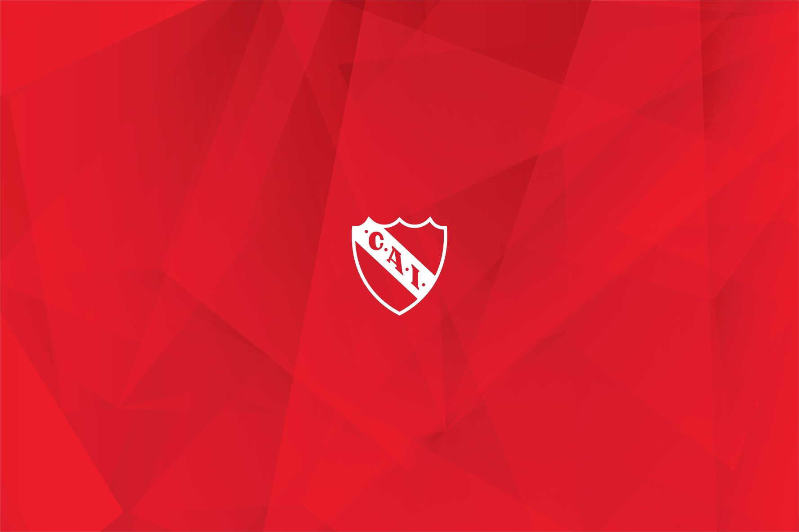

A mediados de septiembre de 1905 la apertura de la calle Camarones y sus aledañas, provocaron la fractura del lote de Piana, obligando a abandonar imprevistamente el terreno de Boyacá y Camarones, que ya por ese entonces no se encontraba en muy buenas condiciones ("un bañado con dos zanjas" a decir de los rivales). Decidieron trasladarse a solo cinco cuadras de allí: a Bella Vista (hoy Donato Álvarez) al 2000, en la intersección con el Camino a San Martín (hoy Avenida San Martín). Frente al antiguo lote triangular de Jorge Klein coexistían varios hornos de ladrillos por ejemplo los de Arzani y Equitanti, allí se establecieron durante la segunda mitad del año. Este pequeño paso hacia una zona más accesible, da nuevos bríos a los cada vez más numerosos socios y directivos imbuidos de una firmeza sin par. Para ratificar este gradual pero firme avance, el club organizó su propio campeonato: el TROFEO INDEPENDIENTE enfrentando en la primera fecha el 21 de septiembre de 1905 al Maipo Banfield Football Club, al cual derrotó 4 a 0. La estadía en este estadio fue efímera, pues en diciembre del mismo año abandonan el predio.
Estadio Libertadores de América Ricardo Enrique Bochini
Primer Estadio
Independiente Football Club, en sus primeros años del siglo XX, arrendó un terreno en Lavadero de Flores para su primer campo de juego. La zona estaba en proceso de urbanización, marcada por extensos campos, industrias insalubres y descampados. La historia del club se forjó en esta área, donde los fundadores dedicaron esfuerzos al acondicionamiento del terreno. La cancha, de 107x56 metros, se marcó con líneas blancas de cal. El primer partido registrado en esta cancha fue contra Club Almirante Togo el 19 de marzo de 1905. Independiente jugó 25 partidos en esta cancha, destacando una victoria ante Boca Juniors por la Copa Villalobos. El último partido fue contra Estudiantes Juniors el 10 de septiembre de 1905.
Segundo Estadio
Tercer Estadio
Se forma una subcomisión para encontrar un nuevo campo que cumpla con los requisitos de la Asociación. Obtienen el alquiler de la Plaza de ejercicios físicos del Colegio Nacional Mariano Moreno por diez pesos mensuales. El terreno, ubicado en el barrio bajo de la Recoleta, era conocido como la "Tierra del Fuego". Aunque Estudiantil Porteño había jugado allí, la cancha era reglamentaria y tenía alambrado y casilla. Este lugar albergó los últimos partidos del Trofeo Independiente, incluida la final entre La Prensa y Estudiantil Caballito. Independiente A tuvo buen desempeño en algunos partidos, pero el campo fue rechazado por la Comisión Fiscalizadora de Fields de la AFA debido al mal estado del césped.